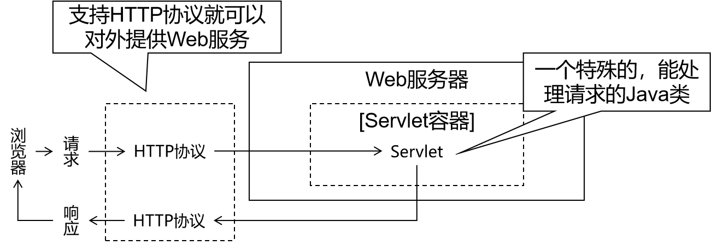

JavaWeb
JavaWeb 开发相关，不包含 JSP、Thymeleaf。

XML Extensible Markup Language
基本语法
声明是固定格式；根标签有且只能有一个；允许单双标签，且可以嵌套，但是不能交叉嵌套；标签名、属性名建议使用小写字母；属性值必须加引号，单双皆可。
<?xml version="1.0" encoding="UTF-8"?>
Schema 约束
此约束要求在一个 XML 文档中，所有标签和属性都必须在约束中有明确的定义。
| 属性名 | 作用 |
|---|---|
| xmlns | 指出当前 XML 文档约束规则的名称空间位置 根据此属性来引用一个具体的名称空间 |
| xmlns:xsi | 指出 xmlns 中定义此属性的约束文档 |
| xsi:schemaLocation | 在 xsi 名称空间下引用 schemaLocation 属性 指定当前 XML 文档中所用到的约束文档本身的文件的地址 |
Tomcat
Tomcat 是一个开源应用服务器，同时也用作于 servlet 容器，为 Java 应用程序提供服务。其中 Javaweb 项目并不是将源代码进行部署，而是部署包 Artifact。
在 IntelliJ IDE 中 Run -> Edit Configurations -> Edit Configuration Templates -> Tomcat Server -> Local 进行配置，完成后出现 Application Servers 选项。

CentOS 空间
- 安装 Java
Tomcat 要求在服务器上安装 Java 来执行任何 Java Web 的应用程序代码。
yum install java-1.8.0-openjdk-devel.x86_64
- Tomcat 安装配置
出于安全考虑，Tomcat 应该作为非 root 用户运行。故创建一个运行此服务的新用户和组。
# 创建新 Tomcat 组
sudo groupadd tomcat
# 然后创建一个新 Tomcat 用户使之成为该组的成员
# 其主目录为安装 Tomcat 的 /opt/tomcat,以及一个没有人可以登录该帐账户的 shell /bin/false
sudo useradd -M -s /bin/nologin -g tomcat -d /opt/tomcat tomcat
安装 Tomcat8 需先下载最新的二进制版本，然后手动配置。
wget https://downloads.apache.org/tomcat/tomcat-8/v8.5.71/bin/apache-tomcat-8.5.71.tar.gz
sudo mkdir /opt/tomcat && sudo tar xvf apache-tomcat-8*tar.gz -C /opt/tomcat --strip-components=1
设置对 Tomcat 安装正确访问的权限。
cd /opt/tomcat
# 授予 Tomcat 组对整个安装目录的所有权
sudo chgrp -R tomcat /opt/tomcat
# 授予 Tomcat 组对 conf 目录及其所有内容的读取、执行对目录本身的访问权限
sudo chmod -R g+r conf && sudo chmod g+x conf
# 设置 Tomcat 用户为 webapps、work、temp、logs 目录的拥有者
sudo chown -R tomcat webapps/ work/ temp/ logs/
欲将 Tomcat 作为服务运行，所以设置一个 Tomcat Systemd 的单元文件。并通过此脚本告诉服务器以 Tomcat 用户身份运行 Tomcat 服务。
sudo vi /etc/systemd/system/tomcat.service
# Systemd unit file for tomcat
[Unit]
Description=Apache Tomcat Web Application Container
After=syslog.target network.target
[Service]
Type=forking
Environment=JAVA_HOME=/usr/lib/jvm/java-1.8.0-openjdk-1.8.0.302.b08-0.el7_9.x86_64/jre
Environment=CATALINA_PID=/opt/tomcat/temp/tomcat.pid
Environment=CATALINA_HOME=/opt/tomcat
Environment=CATALINA_BASE=/opt/tomcat
# Environment='CATALINA_OPTS=-Xms512M -Xmx1024M -server -XX:+UseParallelGC'
# Environment='JAVA_OPTS=-Djava.awt.headless=true -Djava.security.egd=file:/dev/./urandom'
ExecStart=/opt/tomcat/bin/startup.sh
ExecStop=/opt/tomcat/bin/shutdown.sh
User=tomcat
Group=tomcat
UMask=0007
RestartSec=10
Restart=always
[Install]
WantedBy=multi-user.target
# 重新加载 Systemd 以加载 Tomcat 单元文件
sudo systemctl daemon-reload
# 启动 Tomcat 服务
sudo systemctl start tomcat
# 检查服务状态
sudo systemctl status tomcat
# 开启在服务器启动时启动
sudo systemctl enable tomcat
mac 空间
# 指定版本9
$ brew install tomcat@9
# 查看安装地址
$ brew ls tomcat@9
# 启动、停止Tomcat => http://localhost:8080/
$ brew services start|stop tomcat@9
# tomcat 目录结构
$ tree -x /usr/local/Cellar/tomcat@9/9.0.62/libexec
/usr/local/Cellar/tomcat@9/9.0.62/libexec
├── BUILDING.txt
├── CONTRIBUTING.md
├── bin => 可执行文件目录
├── conf -> ../../../../etc/tomcat@9 => 配置文件目录
├── lib => 存放 lib 的目录
├── logs => 存放日志文件目录
├── temp => 临时目录
├── webapps => 项目部署的目录
└── work => 工作目录
配置文件
conf 目录下的 server.xml 文件中可看出，Tomcat 启动后，会占用个三个端口号。
...
<!-- 第22行 -->
<Server port="8005" shutdown="SHUTDOWN">
...
<!-- 第69行 -->
<Connector port="8080" protocol="HTTP/1.1"
connectionTimeout="20000"
redirectPort="8443" />
...
<!-- 第115行 => 默认被注释 -->
<Connector port="8009" protocol="AJP/1.3" redirectPort="8443" />
Servlet
快速上手
Servlet 可使用 javax.servlet 和 javax.servlet.http 包创建。前者包下一系列的接口用于定义开发标准。遵循这一套标准，不同的 Servlet 容器提供了不同的实现。后者接口及其实现类就是实际开发时使用的具体的 Servlet。
HttpServlet 类 - 继承自 -> GenericServlet 类 - 实现 -> Servlet接口。
Servlet 接口负责访问规范，GenericServlet 类在持有 ServletConfig 类引用的同时完成空实现，HttpServlet 类实现上层定义的抽象 service 方法，实现请求分发。
web.xml 文件用来初始化配置页面、servlet、servlet-mapping、filter、listener、启动加载级别等信息。同时注意约定大于配置。
<?xml version="1.0" encoding="UTF-8"?>
<web-app xmlns="http://xmlns.jcp.org/xml/ns/javaee"
xmlns:xsi="http://www.w3.org/2001/XMLSchema-instance"
xsi:schemaLocation="http://xmlns.jcp.org/xml/ns/javaee http://xmlns.jcp.org/xml/ns/javaee/web-app_4_0.xsd"
version="4.0">
<!-- context-param 是上下文参数 => 属于整个 web 工程 => Filter 过滤器、Listener 监听器、Servlet 程序皆可访问 -->
<context-param>
<param-name>username</param-name>
<param-value>zs</param-value>
</context-param>
<!-- servlet 标签给 tomcat 配置 servlet 程序 -->
<servlet>
<!-- servlet-name 标签给 servlet 程序起别名 => 通常是类名 -->
<servlet-name>HelloServlet</servlet-name>
<!-- servlet-class 是 servlet 程序全类名 -->
<servlet-class>com.???.servlets.HelloServlet</servlet-class>
<!-- init-param是初始化参数 -->
<init-param>
<param-name>username</param-name>
<param-value>zs</param-value>
</init-param>
<load-on-startup>1</load-on-startup>
</servlet>
<!-- servlet-mapping 给 servlet 程序配置访问地址 -->
<servlet-mapping>
<!-- 通知服务器当前配置的地址是指定的 servlet 程序 -->
<servlet-name>HelloServlet</servlet-name>
<!-- url-pattern 标签配置访问地址 -->
<!-- / 解析为 http://ip:port/工程路径 -->
<!-- 工程路径即是部署 war 包的 Application context -->
<url-pattern>/hello</url-pattern>
</servlet-mapping>
</web-app>
当 Servlet 首次接收请求，会通过构造方法的调用完成实例化，通过 init() 的调用进行初始化，随后执行 service() 开展服务。此后的每一次请求也都是服务，即创建对象后，所有的URL地址匹配的请求都由这同一个对象来处理。当容器关闭时 web 工程停止，所有的 Servlet 实例会通过 destroy() 进行销毁。
/* 开发中很少通过实现 Servlet 接口的方式去实现 servlet 程序 */
public class HelloServlet implements Servlet {
public HelloServlet() {
System.out.println("构造器方法执行");
}
@Override
public void init(ServletConfig servletConfig) throws ServletException {
System.out.println("初始化方法执行");
/* 测试 ServletConfig 类 */
// 获取 servlet 程序别名
System.out.println(servletConfig.getServletName()); // HelloServlet
// 获取初始化参数 init-param
System.out.println(servletConfig.getInitParameter("username")); // zs
// 获取 ServletContext 对象
System.out.println(servletConfig.getServletContext()); // org.apache.catalina.core.ApplicationContextFacade@47d46fad
}
@Override
public ServletConfig getServletConfig() {
return null;
}
@Override
public void service(ServletRequest servletRequest, ServletResponse servletResponse) throws ServletException, IOException {
System.out.println("I got you => service");
// servletRequest 不能直接调用 getMethod，其子接口 HttpServletRequest 才可调用 => 用于区分请求方法
// 这里强制类型转换向下转型说明 => 传递进 service 方法的 servlet 是 HttpServlet,故可以理解为已经过一次向上转型,向上转型不需要强转,向下转型才需强转
HttpServletRequest httpServletRequest = (HttpServletRequest) servletRequest;
// 获取请求方式并根据请求方式判断
String method = httpServletRequest.getMethod();
if("GET".equals(method)) {
System.out.println("GET请求");
doGet();
} else if ("POST".equals(method)) {
System.out.println("POST请求");
doPost();
} else {
System.out.println("else");
}
}
private void doPost() {
System.out.println("POST请求操作反馈");
}
public void doGet() {
System.out.println("GET请求操作反馈");
}
@Override
public String getServletInfo() {
return null;
}
@Override
public void destroy() {
System.out.println("销毁方法执行");
}
}
当请求出现，service() 会自动响应，根据请求种类决定调用具体的 doXxx 方法。开发中通常直接找 Servlet 子类去继承即可。在 HttpServlet 中的这些方法都是 405 实现风格，需要子类去实现对应方法，否则默认报 405 错误。注意客户端访问不到 WEB-INF 下的内容，但是与其同级资源是可访问的。
Tomcat 默认于首次请求时进行实例化、初始化，以此提高系统的启动速度。若需提高响应速度，可通过 <servlet> 里的 <load-on-startup> 设置启动顺序，数值越小，启动越靠前。
Servlet 在容器中是线程不安全的。若一个线程需要根据实例的成员变量做逻辑判断，那么可能存在某个中间时机，另一个线程改变了被依赖的成员变量值，导致此线程的执行路径发生变化。最好不要在 Servlet 中定义成员变量，若不得不定义成员变量，应尽可能的不去修改成员变量的值，不要根据成员变量的值做逻辑判断。
ServletConfig 类
ServletConfig 类是 Servlet 程序的配置信息类，常用于获取 Servlet 程序别名，即 servlet-name 的值；获取初始化参数 init-param；获取 ServletContext 对象。
Tomcat 初始化一个 Servlet 时，会将该 Servlet 的配置信息封装到 ServletConfig 对象中，此时在初始化调用的 init(ServletConfig servletConfig) 方法将 ServletConfig 对象传递给 Servlet。每个 Servlet 维护各自的 ServletConfig。
这里注意一个空指针问题。在继承于 HttpServlet 的类中重写初始化方法后，可能会导致后续 doXxx 方法内的 ServletConfig 对象丢失。这是由于 getServletConfig 方法是在 GenericServlet 中获取的。而 GenericServlet 类也有初始化方法，且在此方法中将 config 进行保存。当子类有初始化且父类也有时，直接调用子类的初始化，导致父类保存操作丢失。
public class Demo01Servlet extends HttpServlet {
@Override
protected void doGet(HttpServletRequest req, HttpServletResponse resp) throws ServletException, IOException {
ServletConfig servletConfig = getServletConfig();
System.out.println("I got you.");
System.out.println(servletConfig.getServletName());
// 获取 web.xml 配置的上下文参数 context-param
ServletContext servletContext = getServletConfig().getServletContext();
System.out.println(servletContext.getInitParameter("username")); // zs
// 获取当前的工程路径
System.out.println(servletContext.getContextPath()); // /servlet
// 获取工程部署后在服务器磁盘上的绝对路径 => IDEA 整合 tomcat 后, tomcat 被拷贝的副本内容
System.out.println(servletContext.getRealPath("/")); // /Users/???/IdeaProjects/zsJavaWeb/out/artifacts/pro_javaweb_servlet_war_exploded/
// 存储数据
// 获取 servletContext 对象
ServletContext servletContext1 = getServletContext();
servletContext1.setAttribute("key1","value1");
System.out.println(servletContext1.getAttribute("key1")); // value1
}
@Override
public ServletConfig getServletConfig() {
return super.getServletConfig();
}
@Override
public ServletContext getServletContext() {
return super.getServletContext();
}
@Override
public String getServletInfo() {
return super.getServletInfo();
}
@Override
public void init(ServletConfig config) throws ServletException {
super.init(config);
}
}
| servlet 接口方法名 | 作用 |
|---|---|
| getServletName() | 获取 servlet-name |
| getServletContext() | 获取 ServletContext 对象 |
| getInitParameter() | 获取配置 Servlet 时设置的初始化参数 => 根据名字获取值 |
| getInitParameterNames() | 获取所有初始化参数名组成的 Enumeration 对象 |
ServletContext 类
和 ServletConfig 一样，ServletContext 也是一个接口，其表示 Servlet 上下文对象。一个 web 工程只有一个 ServletContext 对象实例。ServletContext 是一个域对象，即可以像 Map 一样存储数据的对象，其中的域为操作范围。
| 存储 | 取出 | 删除 | |
|---|---|---|---|
| Map | put | get | remove |
| 域对象 | setAttribute | getAttribute | removeAttribute |
ServletContext 常用于获取 web.xml 配置的上下文参数 context-param；获取当前的工程路径；获取工程部署后在服务器磁盘上的绝对路径；存储数据。在工程部署时创建，在工程停止时销毁。
HttpServletRequest 类
Tomcat 服务器将请求过来的 Http 协议信息解析好封装到 Request 对象中，再传递给 service 方法。HttpServletRequest 对象可获取所有请求的信息。
| HttpServletRequest 类常用方法 | 说明 |
|---|---|
| getRequestURI() | 获取请求的资源路径（不包含服务器和端口号） |
| getRequestURL() | 获取请求的统一资源定位符（绝对路径） |
| getRemoteHost() | 获取客户端的ip地址 |
| getHeader() | 获取请求头 |
| getParameter("key") | 获取请求参数 |
| getParameterValues("key") | 获取请求参数（多值使用） |
| getMethod() | 获取请求方式GET|POST |
| setAttribute(key,value) | 设置域数据 |
| getAttribute(key) | 读取域数据 |
| getRequestDispatcher() | 获取请求转发对象 |
HttpServletResponse 类
每当请求传入 Tomcat，Tomcat 就会创建一个 Response 对象并传递给 Servlet 程序。HttpServletResponse 表示所有相应的信息。字节流 getOutputStram() 传递二进制数据，常用于下载；字符流 getWriter() 常用于回传字符串。注意二者不能同时使用，只能选其一。
PrintWriter writer = resp.getWriter();
writer.write("response content by zs"); // 中文会乱码 => System.out.println(resp.getCharacterEncoding()); => ISO-8859-1
请求转发与重定向
- 请求转发
转发即在请求的处理过程中，Servlet 完成了该阶段的任务，需要把请求转交给下一个 Servlet 程序继续处理，以此协作完成完整功能。
// 请求转发必须以斜杠开头 => 映射到 web 目录
req.getRequestDispatcher("/servletN").forward(req,res);
// 注意请求转发能访问 WEB-INF 目录下内容
req.getRequestDispatcher("/WEB-INF/xxx.html");
- base 标签
Html 中位于 <head> 标签内的 <base> 标签用于设置页面相对路径工作时参照的地址。其 href 属性就是参数的地址值。可用做于因转发的地址不变这一特性导致跳转产生相对路径问题的解决方式。
- 重定向
重定向即在请求的处理过程中，Servlet 在完成了该处理任务后，以一个响应的方式通知浏览器应另外再访问下一个资源。因之前地址可能被废弃。
// 方式一
resp.setStatus(302);
resp.setHeader("Location","http://localhost:8080/xxx");
// 方式二
resp.sendRedirect("http://localhost:8080/xxx");
- 总结对比
| 转发 | 重定向 |
|---|---|
| 一次请求 | 两次请求 |
| 浏览器地址栏显示的是第一个资源的地址 | 浏览器地址栏显示的是第二个资源的地址 |
| 全程使用的是同一个request对象 | 全程使用的是不同的request对象 |
| 在服务器端完成 | 在浏览器端完成 |
| 目标资源地址由服务器解析 | 目标资源地址由浏览器解析 |
| 目标资源可以在WEB-INF目录下 | 目标资源不能在WEB-INF目录下 |
| 目标资源仅限于本应用内部 | 目标资源可以是外部资源 |
Cookie 与 Session
Cookie
Cookie 是服务端通知客户端保存键值对的一种技术，客户端存在的 cookie 会随着每次请求发送给服务器，每个 Cookie 的大小不能超过 4kb。
- Cookie 的创建
浏览器没有 Cookie 时向服务端发送请求，服务端会创建 Cookie 并通知客户端保存返回的 Cookie，在客户端收到响应后，查阅到 set-cookie 响应头，有此 Cookie 则修改，无则创建。
// 创建 cookie 对象
Cookie cookie = new Cookie("cookieKey","cookieValue");
// 通知客户端保存
resp.addCookie(cookie);
- Cookie 的获取
// 获取客户端传递的所有 Cookie
Cookie[] cookies = req.getCookies();
for(Cookie cookie:cookies){
System.out.println(cookie.getName()); // 获取cookie的键
System.out.println(cookie.getValue()); // 获取cookie的值
}
- Cookie 的修改
// 方案一 => 创建同名 cookie 并回传
Cookie cookie = new Cookie("cookieKey","cookieValue");
resp.addCookie(cookie);
// 方案二 => 查找所需修改的 cookie 对象并调用 setValue 赋新值并返回
Cookie cookie = CookieUtils.findCookie("cookieKey",req.getCookies());
if(cookie != null){cookie.setValue("newValue");resp.addCookie(cookie);}
- Cookie 的生命控制
| 会话级Cookie | 持久化Cookie |
|---|---|
| 服务器端并没有明确指定Cookie的存在时间 | 服务器端明确设置了Cookie的存在时间 |
| 在浏览器端，Cookie数据存在于内存中 | 在浏览器端，Cookie数据会被保存到硬盘上 |
| 只要浏览器还开着，Cookie数据就一直都在 | Cookie在硬盘上存在的时间根据服务器端限定的时间来管控，不受浏览器关闭的影响 |
| 浏览器关闭，内存中的Cookie数据就会被释放 | 持久化Cookie到达了预设的时间会被释放 |
// setMaxAge() => 设置 cookie 最大生存时间,单位为秒 => 正数表示在指定的秒数后过期;负值表示浏览器关闭就删除;0表示立刻删除
cookie.setMaxAge(-1); // 默认是-1
- Cookie 的路径设置
cookie.setPath(req.getContextPath() + "/xxx"); // 满足路径才会发送此cookie
Session
Session 用于存放客户端与服务器之间的会话，以解决 http 无状态的衍生问题。每个客户端都会有一个各自的 Session 会话，常用来保存登录后的信息。
- 创建与获取 Session
// 第一次调用 => 创建;后续调用 => 获取
HttpSession session = req.getSession();
// 判断是否为新 Session => isNew() => true => 新创建
boolean isNew = session.isNew();
// 得到 Session 的会话 id 值 => 每个会话都有一个唯一 id
String id = session.getId();
- Session 域数据存取
req.getSession().setAttribute("keyName","valueContent");
Object obj = req.getSession().getAttribute("keyName"); // valueContent
- Session 生命周期控制
Session 的超时是指客户端两次请求的最大间隔时长。
// setMaxInactiveInterval => 设置 Session 超时时间 => 超过即销毁 => 秒为单位
// 常用于修改个别 Session 超时时长
req.getSession().setMaxInactiveInterval(3); // 当前 session 3 秒超时
// getMaxInactiveInterval => 获取 Session 超时时间 => 秒为单位
int maxInactiveInterval = req.getSession().getMaxInactiveInterval(); // 默认 1800s => 30mins
// 当前 Session 会话马上超时
req.getSession().invalidate();
<!-- tomcat 服务器配置 -->
<session-config>
<session-timeout>30</session-timeout>
</session-config>
<!-- 当前 web 工程创建出来的所有 session 默认 20 分钟 -->
<!-- web.xml -->
<session-config>
<session-timeout>20</session-timeout>
</session-config>
小结
Session 底层是基于 Cookie 实现的。无任何 Cookie 的浏览器在访问服务器时，服务器会通过 req.getSession() 创建 Session 会话对象，与此同时也会创建出一个 Cookie 的对象。
此 Cookie 对象的键是 JSESSIONID，值是新建 Session 的 id。后续通过响应将新建 Session 的 id 值返回给客户端，Set-Cookie:JSESSIONID=xxxxx;。
当浏览器接受到数据后会立即创建 Cookie 对象，后续的每次请求会根据 path 路径的设置携带具有 Session id 的 Cookie 给服务器。服务器据 req.getSession() 方法以 Cookie 中的 id 值查询此前创建好的 Session 对象，并返回。
若在 Session 超时时长内，删除客户端 Session 的 Cookie。那么由于没有 Cookie 中携带的 Session id 的值，故服务器会新建一个 Session 会话并继续上述的操作。
Filter 过滤器
Filter 过滤器是 JavaEE 规范，即接口，作用是拦截请求，过滤响应。常见的应用场景有权限检查、日志操作、事务管理等。
快速上手
<!-- web.xml -->
...
<!-- filter 标签用于配置一个过滤器 -->
<filter>
<!-- 用于给 filter 起一个别名 -->
<filter-name>AdminFilter</filter-name>
<!-- 配置 filter 全类名 -->
<filter-class>com.xxx.servlets.AdminFilter</filter-class>
<init-param>
<param-name>username</param-name>
<param-value>zs</param-value>
</init-param>
</filter>
<!-- filter-mapping 配置拦截路径 -->
<filter-mapping>
<!-- 表示当前的拦截路径交与的 filter -->
<filter-name>AdminFilter</filter-name>
<!-- 配置拦截路径 -->
<url-pattern>/</url-pattern>
</filter-mapping>
...
public class AdminFilter implements Filter {
@Override
public void init(FilterConfig filterConfig) throws ServletException {
// 获取 filter 类名称 filter-name
System.out.println(filterConfig.getFilterName());
// 获取 filter 中配置的初始化参数 init-param
System.out.println(filterConfig.getInitParameter("initParam"));
// 获取 ServletContext 对象
System.out.println(filterConfig.getServletContext());
}
// doFilter 用于拦截请求 => 权限检查
@Override
public void doFilter(ServletRequest servletRequest, ServletResponse servletResponse, FilterChain filterChain) throws IOException, ServletException {
HttpServletRequest httpServletRequest = (HttpServletRequest) servletRequest;
HttpSession session = httpServletRequest.getSession();
Object user = session.getAttribute("user");
if(user == null){
servletRequest.getRequestDispatcher("/login.jsp").forward(servletRequest,servletResponse);
return;
} else {
// 链式调用后输出为 => Filter1 前置操作 => Filter2 前置操作 ... => Filter2 后置操作 => Filter1 后置操作
System.out.println("Filter1 前置操作");
System.out.println(Thread.currentThread().getName());
// 程序继续向下访问用户目标资源
filterChain.doFilter(servletRequest,servletResponse);
System.out.println(Thread.currentThread().getName());
System.out.println("Filter1 后置操作");
}
}
@Override
public void destroy() {
}
}
Filter 生命周期
和 Servlet 生命周期类比，Filter 生命周期的关键区别是在 Web 应用启动时创建对象。
| 生命周期阶段 | 执行时机 | 执行次数 |
|---|---|---|
| 创建对象 | Web应用启动时 | 一次 |
| 初始化 | 创建对象后 | 一次 |
| 拦截请求 | 接收到匹配的请求 | 多次 |
| 销毁 | Web应用卸载前 | 一次 |
FilterConfig 类
Tomcat 每次创建 Filter 时，也会创建一个 FilterConfig 类，包含 Filter 配置文件的配置信息。该类的作用是获取 Filter 过滤器的配置内容。
FilterChain 类
多个 Filter 的拦截范围若存在重合部分，那么这些 Filter 会形成 FilterChain。浏览器请求重合部分对应的目标资源时，会依次经过 FilterChain 中的每个 Filter。
FilterChain 中每一个 Filter 执行的顺序是由 web.xml 中 filter-mapping 配置的顺序决定的。
多个 Filter 过滤器执行时，所有 Filter 和目标资源都默认执行在同一个线程中；多个 Filter 共同执行的时候，其都使用同一个 Request 对象。
Filter 拦截路径
-
精确匹配 => 指定被拦截资源的完整路径
-
目录匹配 => <url-pattern>/xxx/*</url-pattern>
-
后缀名匹配 => <url-pattern>*.html</url-pattern>
Listener 监听器
Listener 是 JavaEE 规范，即是接口，作用是监听某种事务的变化，通过回调函数返回给程序去做一些相应处理。
ServletContextListener 监听器可监听 ServletContext 对象的创建和销毁。
ServletContext 对象在 web 工程启动的时候创建，在停止时销毁。该两个阶段分别调用 contextInitialized 和 contextDestroyed。
<!-- web.xml -->
...
<listener>
<listener-class>com.zairesinatra.servlets.MyServletContextListener</listener-class>
</listener>
...
public class MyServletContextListener implements ServletContextListener {
@Override
public void contextInitialized(ServletContextEvent servletContextEvent) {
System.out.println("ServletContext 对象创建");
}
@Override
public void contextDestroyed(ServletContextEvent servletContextEvent) {
System.out.println("ServletContext 对象销毁");
}
}
Bugs 解决
- Web Application 创建问题
在 IntelliJ 中 Java 项目下，期望创建一个 JavaWeb 项目，但无法直接在 new modules 中选择 Web Application。可以先通过创建普通 Java 项目，再右键点击 Add Framewoks Support，选中 Web Application 进行补充。其次，也可在 Project Structure settings 选项中 project settings 里的 facets 栏补充一个 Web Application 的项目给指定模块。
后者在保证路径正确的同时，考虑到部署 tomcat 中的并非项目源码，而是部署包 Artifact。故对于 "'web' facet resources are not included in an artifact" 警告，应点击 Create Artifact。
不考虑 Maven 的情况下，期望添加包含 Jar 包的 lib 文件夹作为开发依赖。应该先对 lib 指定 Add as library 作为库，然后就可以在 file 中 Project Structure settings 选项对指定的 Modules 添加 Library。
注意检查 Modules 下方的 Library 选项里，lib 包的右侧框内是否添加了所需 Jar 包。若没有添加，则导入的是一个空 dependencies 的 lib 文件夹，仍然会出现 Jar 包搜索不到的异常。这种添加不会出现在 External Libraries 中，不同于 Tomcat 中 Jar 包的导入。
在包含 Jar 包的 lib 文件夹位置方面，除了在项目文件目录下，对于某些模块指定的 Jar 包，也可以放置在 web 文件夹的 WEB—INF 文件夹创建的 lib 内。这种方法的好处是不需要其他的后续操作。
// 报错 => 加载JDBC的驱动出现问题,检查导包情况.
java.lang.ClassNotFoundException: "com.mysql.cj.jdbc.Driver"
- MySQL 版本的配置区别
// JDBC连接Mysql5 => com.mysql.jdbc.Driver
url:jdbc:mysql://localhost:3306/mysql?useUnicode=true&characterEncoding=UTF-8
// JDBC连接Mysql6+ => com.mysql.cj.jdbc.Driver => 需指定时区serverTimezone
url:jdbc:mysql://localhost:3306/mysql?useUnicode=true&characterEncoding=utf8&serverTimezone=GMT%2B8&useSSL=false
- Artifacts 中的 Web Application
Web Application Exploded 是解压后的 war 包，Web Application Archive 是 web 应用程序的压缩包，也就是 war 包。war 包放入 tomcat 的 webapps 文件夹会被自动解压。在补充 artifact 时建议选择前者。
- Application context 和 context root
Application context 即是 context root，在配置 tomcat 的 deployment 选项中是 <module_name_war_exploded>。
- 重新部署问题
对于已经运行过的 Web 项目，若增加目录和文件，那么部署目录有可能不会自动同步过来，从而造成实际运行的效果和期望的不同。在 build artifacts 中选择项目模块的 war 包进行清理 clean，再进行构建 build。
- 404 报错
1.访问地址错误，或确实无此资源；2.错误访问 WEB-INF 目录下的资源；3.Web 应用启动的时候，控制台已经抛出异常，导致整个Web应用不可用，此时访问任何资源都是404；4.服务器端缓存。
| 状态码 | 含义 |
|---|---|
| 200 | 服务器成功处理了当前请求，成功返回响应 |
| 302 | 重定向 |
| 400 | [SpringMVC特定环境]请求参数问题 |
| 403 | 没有权限 |
| 404 | 找不到目标资源 |
| 405 | 请求方式和服务器端对应的处理方式不一致 |
| 406 | [SpringMVC特定环境]请求扩展名和实际返回的响应体类型不一致 |
| 50X | 服务器端内部错误，通常都是服务器端抛异常了 |
- post 请求出现中文乱码
处理函数中设置 req.setCharacterEncoding("utf-8");。需要注意，在设置字符集前不能进行处理请求参数的操作，否则设置失效。
- 回传字符串出现中文乱码
处理函数中设置 resp.setCharacterEncoding("utf-8");。需要注意，在设置字符集前不能进行处理返回参数的操作，否则设置失效。同时此举设置的是设置服务器回传的字符集，若浏览器与服务器字符集不统一则也会存在乱码问题。可通过响应头设置浏览器也使用相同字符集。
// 设置浏览器字符集
resp.setHeader("Content-Type","text/html;charset=utf-8");
// 同时设置服务器与客户端使用utf-8
resp.setContentType("text/html;charset=utf-8");
结束
本博客所有文章除特别声明外，均采用 CC BY-SA 4.0 协议，转载请注明出处！